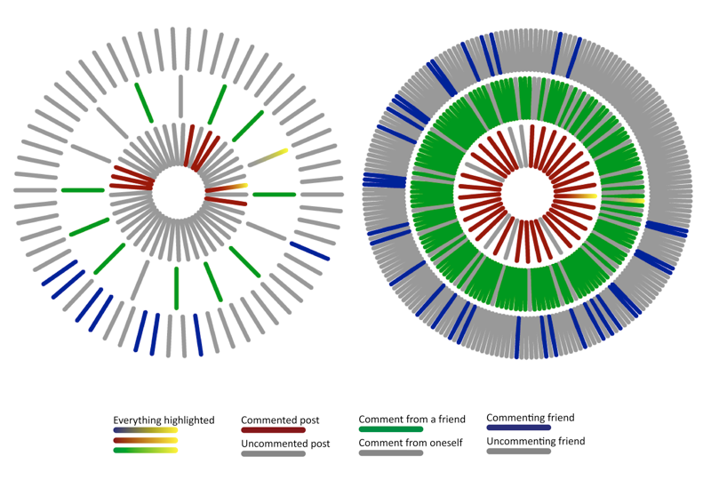

Overview
Much of our daily reflections, communications and commentary appear today integrated as part of our social media network. Services such as Twitter, Facebook and YouTube represent the activities and interpretations of our individual and social life experiences. Considering such activity collections as digital lifestreams, we can detect patterns of significance that are revealed to us through insightful visual summaries. Our Social Reflector provides three dynamic social network visualizations aimed at supporting reflection and the development of insight about online interactions on social network websites.
Publication
H. Chen, A. Kelliher. Conversational lives: visualizing interpersonal online social interaction, in Proceedings of HCI International. July, 2011.
[PDF]
[Springer Link]
Visualization Design
WordCloud: Conversation Potential
The WordCloud interface presents an individuals' Facebook status updates as a weighted 2D list. In this interface, the font size of each status post indicates the number of associated comments (the more comments the larger the font) and the font saturation depicts the number of associated "likes" (the more likes, the more saturated).
This figure is a screen shot of the WordCloud interface depicting an individual's Facebook wall posts, likes and comments as a weighted 2D list.
Clock: Activity Rhythms
The Clock interface depicts an individuals' monthly Facebook status posts and received comments in a radial layout. Here, each circle represents a day in the selected month, and posts and comments are represented as icons placed on the circle lines according to their time of posting. The icons are color-coded blue (posts) and orange (comments) to give participants an at-a-glance overview of the ratio between their outward expression and their inward feedback reception.
The figures are screen shots of the Clock interface depicting Facebook data from one of our user study participants. Data indicates:
a. significant inward traffic on a user's birth-date.
b. regular morning posting by a user.
c. little interactive communication from a user's network.
Circles: Interpersonal Communications
The Circles interface allows users to explore the inward and outward flow of communications within their Facebook network. The rings in the visualization depict status updates (inner), comments (middle) and friends (outer) as selectable, inter-related bars.
The figures are screen shots of the Circles interface depicting data from different user categories: Low number of friends and low activity volume; vs. Medium number of friends and high activity volume.

User Study
We evaluated the design and reflective utility of our application in a multi-activity
user study with a diverse group of Facebook users. We recruited 20 Facebook users (12 male, 8 female) for our study. The participants
ranged in age from 23 to 59, with an average age of 30. The majority of participants
were recruited within a large public university in the United States, with
representatives from the student, staff and faculty bodies. The participants derived
from a wide variety of disciplinary backgrounds, including Design, Music, Computer
Science, Engineering and Media Arts. Additional study participants represented
engineers working in industry.
Participants in our study completed a survey, a two-part comparative activity and a
short interview, with an overall study duration length of 40 minutes. The first module
of the study, as described in 4.1, comprised a short questionnaire survey, examining
participant demographics, their general social communication activities and their
specific use of the Facebook platform. The second component comprised a
comparative activity session, where participants were asked to indicate their beliefs
and understandings about their usage patterns and interactions on Facebook.
Participants completed the following four tasks twice, first while viewing their data
on Facebook and second while viewing their data using the Social Reflector interface.
(a) Communication Network: we asked participants to complete an ego-centric
sociogram diagram depicting the friends/alters of their social network in a
series of four concentric circles, placing closer friends nearer the center (Fig.
4a). Sociograms have proved helpful not only in reliably recording network
data, but also function as a strong cognitive aid helping participants reflect
and think about their social ties and associated activities.
(b) Activity Distribution: we asked participants to characterize their Facebook
activity along a distribution from purely maintaining an online profile (i.e.
only adding to your own wall) to high levels of interaction and
communication with friends (i.e. extensive commenting and activity on
others’ walls). Participants were asked to indicate their answer by marking
their location on an activity distribution bar.